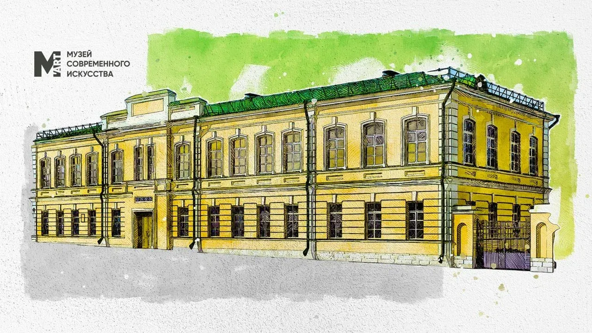

О музее
Музей современного искусства М’АРТ.

Мы находимся по адресу ул. Советская, д. 3. История здания началась в 1778 году, долгие годы оно служило Ордонансгаузом, а сейчас здесь располагается самый большой музей в Оренбургской области.
Это не просто музей. Это культурное пространство, где можно больше узнать об искусстве. У нас проходят лекции, квесты, иммерсивные экскурсии, аукционы — всё, чтобы интересно провести время.
Каждый год в нашем музее можно увидеть порядка десяти выставочных проектов современного искусства, представленных художниками из разных городов.
Постоянная экспозиция посвящена местным художникам. Основную часть составляет корпус работ оренбургского живописца, заслуженного художника России Юрия Рысухина. Отдельные залы посвящены графике авангардиста Сергея Калмыкова. Калмыков вырос в Оренбурге и работал здесь на рубеже 1920–1930 годов. В коллекции музея много графики этого художника с видами нашего города в начале ХХ века. Третий герой — российско-французско-мексиканский художник Владимир Кибальчич (Влади), почётный член Российской академии художеств, кавалер ордена литературы и искусств Франции. Влади жил в Оренбурге в 1930-х годах.
В музее организована арт-резиденция. Это новая форма работы с художниками, которая в Оренбуржье ещё не практиковалась. Арт-резиденция — это место, куда приезжают художники, фотографы, скульпторы для создания новых проектов. В музее имеются комнаты для проживания художников и мастерские.
Кроме выставочных пространств, в М’АРТе есть своё кафе, лекционный зал и сувенирная лавка.
Постоянная экспозиция и билеты